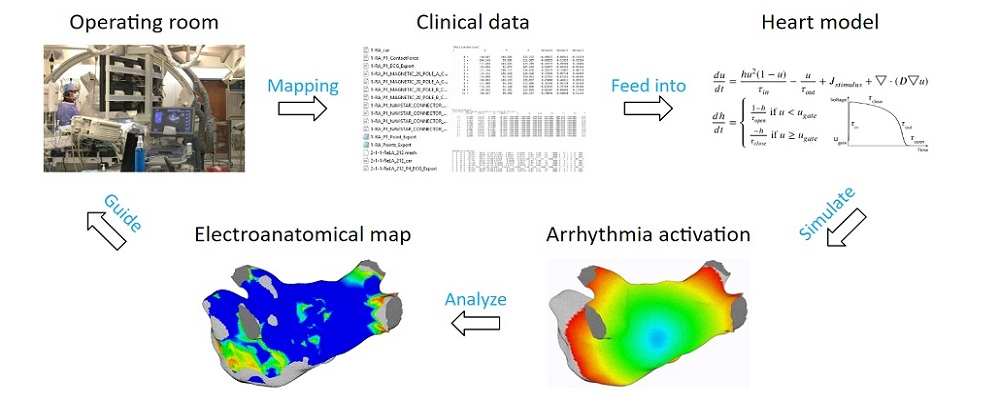
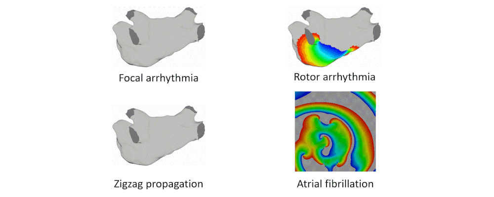
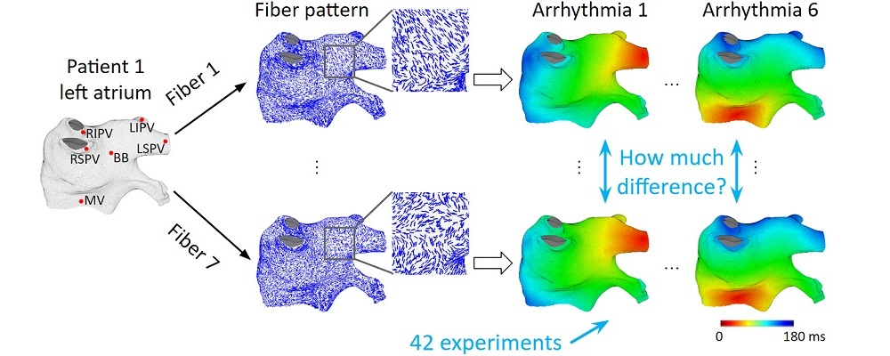
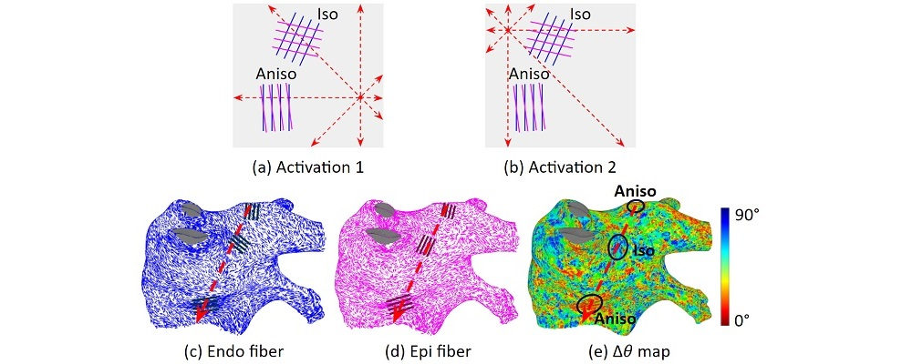
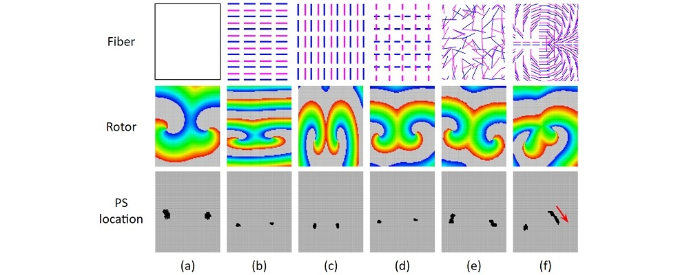

Hi, I'm
Jiyue He
I received my PhD degree in engineering at the University of Pennsylvania. My expertise is in heart modeling for clinical arrhythmia ablation, and I am skilled in robotics. My career goal is to advance medical technologies and to develop life saving products.
A summary of my PhD dissertation

Computational heart model for clinical left atrium arrhythmia ablation.

Arrhythmia simulations.

Fiber effect on activation patterns.

Fiber's cancellation effect.

Fiber's effect on rotor arrhythmias.

Voltage threshold for determing scar regions in atrial fibrillation maps.
Title: CyberCardia: Patient-specific electrophysiological heart model for assisting left atrium arrhythmia ablation.
Committee: Rahul Mangharam(advisor), Rene Vidal(chair), Arkady Pertsov(professor), Daniel Hashimoto(physician).
Contribution: I was the 1st to integrate a heart model that can run in real-time to an arrhythmia mapping system and do not require data outside of the clinical operating room.
Please visit the Research page for more details.